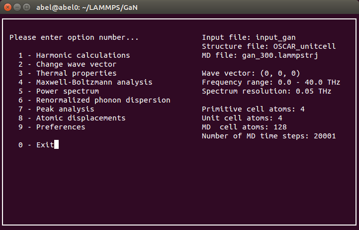

Obtain input data
Prepare Phonopy harmonic lattice dynamics calculation
For many of the features of Dynaphopy the phonon eigenvectors are necessary. These eigenvectors are calculated from the harmonic phonon force constants using phonopy. To do this calculation DynaPhoPy requires either a phonopy FORCE_SETS or FORCE_CONSTANTS type file. These files can be created using phonopy, just follow the instruction in phonopy tutorial to obtain them.
Keep the original POSCAR file used in the calculation containing the unaltered unit cell. This file is used as input for DynaPhoPy to define the unitcell.Prepare Molecular Dynamics (MD) calculation
At the present time DynaPhoPy implements interfaces for VASP and LAMMPS output files.
- Using VASP
VASP is a popular software to perform first principles calculations of solids. DynaphoPy can read the MD trajectory from either OUTCAR or XDATCAR output files.
Please, refere to VASP online manual for detailed information to how to calculate a MD simulation.
- Using LAMMPS
LAMMPS is a flexible software that allows to calculate MD of a large variety of systems using empirical potentials. LAMMPS outputs may vary depending on the output style you use. DynaPhoPy only can read lammpstrj outputs using the custom dump output style using metal units. At this time DynaPhoPy supports reading either atomic positions and atomic velocities. DynaPhoPy will detect automatically the file type.
-Reading atomic positions:dump dynaphopy all custom 1 output_file_name.lammpstrj x y z dump_modify dynaphopy sort id
-Reading atomic velocities:dump dynaphopy all custom 1 output_file_name.lammpstrj vx vy vz dump_modify dynaphopy sort id
Please, refere to LAMMPS online manual for usage and detailed information about output formats and styles.
XDATCAR and LAMMPS trajectory files do not have information about the time step used in the MD. For this reason the time step has to be introduced manually. For this purpose -ts flag is used. This flag accepts a float number that indicated the time step in picoseconds.$ dynaphopy input_file TRAJECTORY -ts 0.002
This flag is ignored reading a trajectory from VASP OUTCAR or hdf5 file (generated using DynaPhoPy). If not specified 0.001 ps time step is used. LAMMPS may not write the coordinates at each time step. This information is obtained from the trajectory file and taken in account. -ts should contain the time step specified in timestep command.
Important: The supercell used to calculate the MD has to be an integer multiple of the cell used in phonopy calculation. The order of the atoms within the cell has to be kept in both cells to work properly. A convenient way is to use Phonopy to generate the supercell (SPOSCAR) to be used in the MD.$ phonopy -d --dim="2 2 2"Alternativelly, DynaPhoPy can be used to generate the supercell for either VASP or LAMMPS. The generated supercell is written in POSCAR or LAMMPS data format respectively.
VASP:$ dynaphopy input_file --dim 2 2 2 -c_poscar SPOSCARLAMMPS:
$ dynaphopy input_file --dim 2 2 2 -c_lammps LAMMPS.lammpstrjA DynaPhoPy input file is required. For more information refere to examples section. LAMMPS generated.
Warning: LAMMPS data files generated using this option are written assuming that each chemical element correspon to one type. If the definition of the interatomic potentials is complicated you may need to edit the generated file.
Dynaphopy input file
To run Dynaphopy it is necessary to prepare a input file. This file is a plain text file and contains basic information about files location, estructural data and other parameters that Dynaphopy requires to work.
All these parameters are optional, in case of not beeing explicitly especificated dynaphopy will use default ones.
Each parameter is preceded by a label which indicates the kind of parameter followerd by its value. Altering this label may prevent the parameters to be recognized correctly. The order of the parameters inside input file is not fix, neither the blank lines used between them. The only requisite is to not leave any blank line between labels and values. Comments can be added to the input file by adding the cheracter # at the begining of each comment line.
Unit cell and force constants files location
Unit cell is defined using a POSCAR type file. Alternativelly a OUTCAR file can be used to read the unit cell.
If POSCAR file is not specified DynaPhoPy will use POSCAR file name stored in the working directory as default.STRUCTURE FILE POSCAR /home/user/phonopy/calculation/POSCAR_unitcellForce constants are needed to perform phonon mode related calculations. Force constants can be defined via phonopy FORCE_SETS or FORCE_CONSTANTS type files. These files can be obtained using phonopy software (check phonopy manual for further information). Also, if working with LAMMPS you can use phonoLAMMPS to obtain them. If either FORCE_SETS or FORCE_CONSTANTS file are not specified, DynaPhoPy features will be limited
Using FORCE_SETS:
FORCE SETS /home/user/phonopy/calculation/FORCE_SETSUsing FORCE_CONSTANTS:
FORCE CONSTANTS /home/user/phonopy/calculation/FORCE_CONSTANTSPrimitive matrix definition
This matrix defines the primitive cell respect to the unit cell. The rows of this matrix corresponds to the primitive axis defined in phonopy manual. If not defined it takes identity matrix meaning that primitive cell and unit cell are the same.
PRIMITIVE MATRIX 0.0 0.5 0.5 0.5 0.0 0.5 0.5 0.5 0.0Supercell matrix
This matrix defines the size of the supercell with displacements used to calculate the force constants in phonopy. This file should match with the provided FORCE_SETS or FORCE_CONSTANTS file. This is specified with --dim flag in Phonopy. For further information, please check Phonopy online tutorial .
This matrix is integer and diagonal. If not especified, by default it takes identity matrix.SUPERCELL MATRIX PHONOPY 4 0 0 0 3 0 0 0 3Phonon dispersion bands
Interfacing with Phonopy, Dynaphopy can obtain the phonon dispersion relations. This parameter defines the path in the reciprocal space used to calculate the bands. This path is defined by small linear segments. Each segment is written in a diferent input line. The first 3 values indicate the origin point in reduced coordinates while tha last 3 indicate the destination. There is no limit for the number of segments used to define the path. If this parameter is not defined DynaPhoPy uses seekpath module to determine the path automatically ).
This feature is a simple interface to phonopy and is meant to be used as reference only. For additional features please use phonopy directly.BANDS 0.0, 0.0, 0.0 0.5, 0.0, 0.5 0.5, 0.0, 0.5 0.625 0.25 0.625 0.375, 0.375, 0.75 0.0, 0.0, 0.0 0.0, 0.0, 0.0 0.5, 0.5, 0.5Alternatively it is possible to define labels for the high symmetry points using the following notation
BANDS 0.0, 0.0, 0.0 0.5, 0.0, 0.5 : GAMMA, X 0.5, 0.0, 0.5 0.625 0.25 0.625 : X, U 0.375, 0.375, 0.75 0.0, 0.0, 0.0 : K, GAMMA 0.0, 0.0, 0.0 0.5, 0.5, 0.5 : GAMMA, LMesh
Interfacing with Phonopy, DynaPhoPy can obtain the density of states (DOS). The DOS can be directly compared with the full power spectra of the velocity autocorrection function. MESH keyword determines the number of sampling q-points used to calculate the DOS calculation. This keyword is equivalent to MESH tag in Phonopy. For additional information refere to phonopy manual. For additional features please use phonopy directly.
MESH PHONOPY 40 40 40Since the calculation of thermal properties rely on the DOS, MESH also influence the results of harmonic thermal properties and renormalized thermal properties.
Note: The DOS is calculated using the tetrahedron method. A dense mesh may be necessary to obtain well converged results. If not defined its default value is: 40 40 40..Comments
Inside the input file, any line starting with # will be ignored. This can be used to write comments in the input file.
Execute Dynaphopy
Phonopy can be used in two different ways: from command line or using interactive user interface. Interactive interface is the most simple way to work with dynaphopy, however command line flag interface has more options and becomes very usefull to calculate in batch. Some options that are not directly editables in interactive interface can be set when loading dynaphopy using additional flags.
Command line interface
Run DynaPhoPy using the script provided in /scripts directory, this script requires the input file and trajectory file file as arguments. Additional flags may be added to requrest the different types of calculations. Basic call:
$ dynaphopy input_file OUTCAR (VASP) $ dynaphopy input_file LAMMPS.lammpstrj -ts 0.002 (LAMMPS)Using -h flag shows all available options.
$ dynaphopy -h usage: dynaphopy [-h] [-lv file] [-i] [-q F F F] [-r F F] [-n N] [-ts step] [-pd] [-pw] [-pp] [-sd file] [-sw file] [-sp file] [-sv file] [-svc file] [-psm N] [-cf N] [-csa] [-pa] [-pad F F F] [-sad S S S S] [-sfc file] [-adp] [-thm] [--thm_full] [--temperature F] [--silent] [--velocity_only] [--asymmetric_peaks] [--read_from N] [--read_to N] [--fcsymm] [--no_symmetry] [--resolution F] [--dim N N N] [--generate_trajectory F F F] [-c_poscar file] [-c_lammps file] [-average] [--MD_commensurate] [--normalize_dos] [--project_on_atom N] data_file [trajectory] DynaPhoPy options positional arguments: data_file input file containing structure related data trajectory Output file containing MD trajectory optional arguments: -h, --help show this help message and exit -lv file, --load_velocity file load velocity from hdf5 file -i, --interactive enter interactive mode -q F F F wave vector used to calculate projections (default: 0 0 0) -r F F, --frequency_range F F frequency range of power spectrum in THz (min, max) -n N number of MD last steps to take (default: All) -ts step, --time_step step time step in ps (default: Read from trajectory file) -pd, --plot_direct plot full power spectrum -pw, --plot_wave_vector plot projection into wave vector -pp, --plot_phonon_mode plot projection into phonon modes -sd file, --save_direct file save full power spectrum to file -sw file, --save_wave_vector file save projection into wave vector to file -sp file, --save_phonon_mode file save projection into phonon modes to file -sv file, --save_velocity file save velocity into hdf5 file -svc file, --save_vc file save wave vector projected velocity into hdf5 file -psm N, --power_spectrum_algorithm N select power spectrum calculation algorithm (default MEM) -cf N, --number_of_mem_coefficients N number of coefficients to use in MEM algorithm (default 300) -csa, --coefficient_scan_analysis request coefficient scan analysis -pa, --peak_analysis request a peak analysis -pad F F F, --plot_atomic_displacements F F F plot atomic displacements respect to specified direction [F F F] -sad S S S S, --save_atomic_displacements S S S S save atomic displacements into a file [ F F F filename ] -sfc file, --save_force_constants file save the renormalized force constants to a file -adp print anisotropic displacement parameters -thm print thermal properties --thm_full print thermal properties from power spectrum --temperature F set temperature (thermal properties) --silent executes without showing plots --velocity_only loads only velocity data from hdf5 file --asymmetric_peaks uses asymmetric Lorentzian functions to fit spectra --read_from N define interval of trajectory to read (default: 1) --read_to N define interval of trajectory to read (default: end) --fcsymm symmetrize force constants --no_symmetry do not use crystal symmetry --resolution F define power spectrum resolution in THz (default 0.05) --dim N N N Set the dimensions of generate structures (Default: [1, 1, 1]) --generate_trajectory F F F Generate a test harmonic trajectory from force constants [total time (ps), time step (ps), energy (Kelvin)] -c_poscar file Generate a VASP POSCAR structure file -c_lammps file Generate a LAMMPS data structure file -average returns average atomic positions from MD --MD_commensurate use commensurate points in MD cell instead of phonon cell --normalize_dos normalize DoS obtained from PS in thermal properties calculationInteractive interface
Interactive interface is the easiest way to run Dynaphopy. This interface presents a menu screen which can be used to browse through the different options. To start the interactive interaface use
-i flag.
Note: Additional flags may be used in combination to this one to set different initial parameters.
$ dynaphopy input_file OUTCAR -i
List of exclusive features in interactive interface
Show atomic velocity distribution analysis (Boltzmann analysis)
Plot harmonic eigenvectors representation
plot harmonic phonon dispersion bands
Plot renormalized phonon dispersion bands
Plot atomic displacements distribution